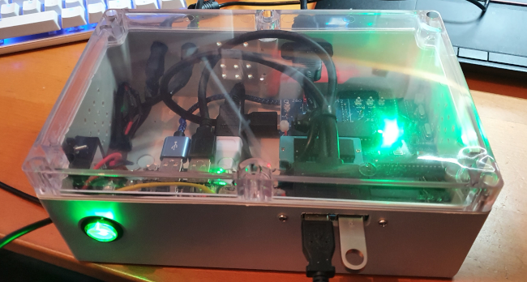
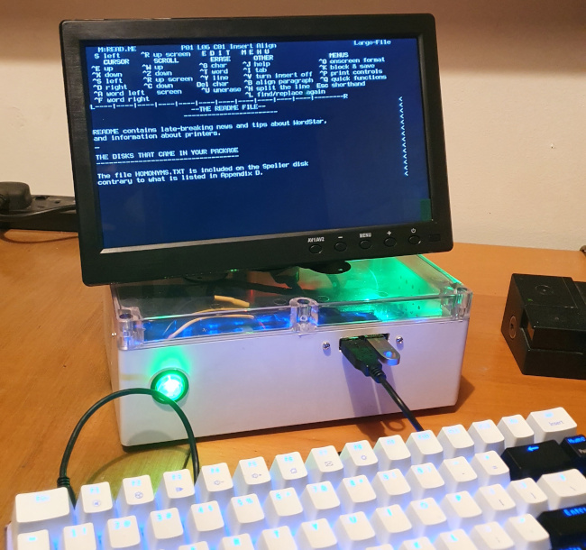

A self-contained CP/M computer based on the Z80 Playground
 I've recently rediscovered the joys of programming for CP/M, using a
Z80 Playground
single-board computer. Like most contemporary Z80 boards, the Z80-PG has no
provision for a display or keyboard device -- it has an
FTDI-style 5V RS232 serial port, and expects to be plugged into
a terminal emulator.
In a previous article
I described
how to use a Raspberry Pi Zero as a serial terminal with an HDMI
video output and USB keyboard port, and a cheap
USB-serial converter. In this article I describe how
to build the whole thing into a case, to create a self-contained
Z80-based CP/M microcomputer. I'm not suggesting that my approach is
the only one; in fact, it's not even particularly optimal. However,
it requires no fine soldering, which is a big deal with my
ageing eyesight.
I've recently rediscovered the joys of programming for CP/M, using a
Z80 Playground
single-board computer. Like most contemporary Z80 boards, the Z80-PG has no
provision for a display or keyboard device -- it has an
FTDI-style 5V RS232 serial port, and expects to be plugged into
a terminal emulator.
In a previous article
I described
how to use a Raspberry Pi Zero as a serial terminal with an HDMI
video output and USB keyboard port, and a cheap
USB-serial converter. In this article I describe how
to build the whole thing into a case, to create a self-contained
Z80-based CP/M microcomputer. I'm not suggesting that my approach is
the only one; in fact, it's not even particularly optimal. However,
it requires no fine soldering, which is a big deal with my
ageing eyesight.
Note:
I do not know the current state of the Z80 Playground project, and the small community around it seems to have disbanded. However, this article is broadly applicable to other small retrocomputers that have a serial terminal as their primary I/O device, like the Z80-MBC2 and RC2014.
I wanted a self-contained unit that a small HDMI monitor would sit atop. There are many ABS plastic cases which are suitable for the job, but I chose one that has a transparent top: the Z80-PG has a number of useful indicator LEDs, that I thought would be nice to see blinking. It would, of course, be more elegant to bring the LEDs to the front panel, but that would require fine soldering onto the Z80-PG board -- something I can no longer manage. Being able to see the LEDs through the transparent lid of the case is only slightly useful, as the case will usually have a monitor on top. But slightly useful is better than not useful at all.
The case I selected has 230mm x 150mm x 87mm outside dimensions. I got it from an electrical retailer, and I presume that the vendor did not have retrocomputing applications in mind. This case is just big enough to fit all the components and the cabling, as you can see in the photo below. The Z80-PG is only about 100mm x 100mm, but I needed to be able to connect two USB extension cables to it, on different sides of the board, and these cables do not bend very tightly -- nor does an HDMI cable. In fact, this is the second case I bought for this project -- the first one turned out to be way too small to fit all the cables in, even the components themselves fit well enough.

There are two USB ports on the front of the case -- one is for a USB keyboard, which goes to the Pi Zero, and the other is an extension for the Z80-PG's USB flash socket. The Z80-PG would still work if this socket were not extended outside the case, but there's no other way to exchange software and data with the outside world, except to copy it to and from the storage. The use of USB storage for emulating the floppy drives sets the Z80 Playground apart from the Z80-MBC2 or the RC2014: these both use memory cards for storage. These cards could be extended to the front panel, but not as easily as a USB port can.
Another (internal) USB cable runs from the Z80-PG to the Pi Zero -- that's the serial interface. I had to buy a right-angle adapter for this USB port, so the USB cable did not have to be bent through a tight radius.
The Pi Zero has an HDMI cable to the rear panel, which connects to the monitor. Also on the rear panel are the 12V power socket. I decided to power the unit from 12V, even though both the Pi Zero and the Z80-PG run on 5V. This allowed me to use the same 12V power supply for the computer and the monitor, reducing the need for transformers and their associated wiring on the desktop. Moreover, a 12V supply is better for the Raspberry Pi than the traditional USB charger, for reasons I explain in this article.
Of course, the Pi won't run directly from a 12V supply -- a step-down converter is needed. The power supply and converter wiring is the only part of the design that needed soldering -- all the other connections are made using pre-assembled cables.
I drilled a mesh of small ventilation holes in the back and sides of the case, although none of the electrical parts runs hot, and I don't really know whether this ventilation is necessary.
The photo below shows the unit in use with a monitor. These 10-inch HDMI monitors cost next to nothing, and sit nicely on top of the case, while still allowing the various indicator LEDs to be visible.

Ah... WordStar. There's really nothing like it. For better or worse.
Apart from the fact that the USB flash drive is about a gazillion times faster than an 8" floppy, it's just like using a real CP/M machine from the early 80s.